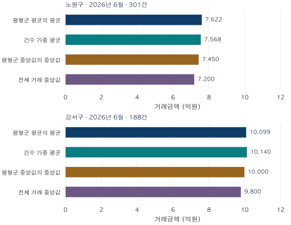

통계의 함정 · 2 / 4
평균의 평균, 중앙값의 중앙값: 묶는 순간 질문이 바뀐다
평균의 평균과 중앙값의 중앙값을 실제 평형군 자료로 계산합니다. 거래·단지·지역을 합칠 때 달라지는 분모와 집계 순서를 배웁니다.
분석 기간 · 2026년 5~6월 계약 · 선택 평형군 | 보유 자료 스냅샷 생성 · 2026-10-04
단지마다 평균가격을 구한 뒤 한 번 더 평균하면 지역 평균이 될까요? 중앙값도 같은 방법으로 합칠 수 있을까요? 계산기는 두 경우 모두 숫자를 내놓지만, 그 숫자가 대표하는 대상은 서로 다릅니다.
1. ‘평균의 평균’에는 생략된 가중치가 있습니다
거래가 2건인 A단지의 평균이 12억 원, 18건인 B단지의 평균이 4억 원이라고 합시다. 모두 가상 수치입니다. 단지마다 한 표를 주면 (12+4)/2 = 8억 원입니다. 거래마다 한 표를 주면 (2×12+18×4)/20 = 4.8억 원입니다.
8억 원은 두 단지의 평균가격을 같은 비중으로 요약합니다. 4.8억 원은 20건의 거래금액 평균입니다. 어느 한쪽의 산술이 틀린 것이 아니라, “대표 단지”를 보고 싶은지 “대표 거래”를 보고 싶은지가 다릅니다.
집단 g의 거래 건수 = ng, 평균 = mg, 집단 수 = G
집단 동일 가중 평균 = Σmg ÷ G
전체 거래 평균 = Σ(ngmg) ÷ Σng
두 번째 식의 분자는 각 집단의 거래금액 합계를 더한 것입니다. 서로 겹치지 않는 집단이 전체를 빠짐없이 나누고, 같은 포함 규칙을 쓴다면 원자료의 평균과 정확히 같습니다. 집단별 건수가 같으면 두 식이 같아집니다. 건수가 달라도 우연히 같을 수 있지만, 그것을 일반 규칙으로 삼을 수는 없습니다.
2. 6월 노원구의 두 평형군을 합쳐봅시다
공개한 집계에서 노원구 전용 17·18평형은 159건·평균 66,516.04만 원, 25·26평형은 142건·평균 85,933.10만 원입니다. 두 평균을 그냥 평균하면 76,224.57만 원이고, 건수로 가중하면 75,676.25만 원입니다.
(159×66,516.04 + 142×85,933.10) ÷ 301
≈ 75,676.25만 원
표시값은 반올림했으며, 실제 검산에는 반올림 전 값을 사용했습니다.
차이는 약 548만 원입니다. 동일 가중은 두 평형군에 각각 50%를 주지만, 실제 거래에서 큰 평형군 비중은 약 47.2%입니다. 평균이 높은 평형군에 실제보다 조금 더 큰 비중을 주었으므로 단순 평균이 높아졌습니다.
| 지역 | 평형군 평균의 단순 평균 | 건수 가중 평균 | 평형군 중앙값의 중앙값 | 전체 거래 중앙값 |
|---|---|---|---|---|
| 노원구 | 76,224.57 | 75,676.25 | 74,500.00 | 72,000.00 |
| 강서구 | 100,987.88 | 101,402.39 | 100,000.00 | 98,000.00 |

실제 공개 집계에서 계산 · 두 전용 평형군만 포함 · 두 패널의 축 범위 동일 · seaborn. 막대의 순위가 통계의 우열을 뜻하지 않습니다.
전체 거래 중앙값은 개별 거래를 합쳐 구한 기존 검증값입니다. 평형군 중앙값에서 역산한 값이 아닙니다. 이제 그 차이를 살펴보겠습니다.
3. 중앙값의 중앙값은 분포를 잃어버립니다
노원구의 두 평형군 중앙값은 64,500만 원과 84,500만 원입니다. 중앙값 두 개의 중앙값은 가운데 두 값의 평균인 74,500만 원입니다. 하지만 실제 301건을 금액순으로 놓은 중앙값은 72,000만 원입니다.
중앙값에는 각 집단 내부에서 값들이 어떻게 퍼져 있는지 담겨 있지 않습니다. 그래서 집단의 크기를 알아도 빠진 순서 정보를 되살릴 수 없습니다. 다음 두 가상 자료를 비교하면 이유가 선명해집니다.
| 자료 | A집단 | B집단 | 전체 중앙값 |
|---|---|---|---|
| 자료 ① | 1, 2, 3 | 9, 10, 11 | (3+9)/2 = 6 |
| 자료 ② | 1, 2, 3 | 1, 10, 11 | (2+3)/2 = 2.5 |
두 자료 모두 A의 중앙값은 2, B의 중앙값은 10이고 건수도 같습니다. 중앙값들의 중앙값은 모두 6입니다. 그런데 자료 ②의 전체 중앙값은 2.5입니다. 일치하는 사례가 있어도 복원 공식이 생기는 것은 아닙니다.
중앙값들에 거래 건수를 곱해 평균하거나, 건수 가중 중앙값을 구해도 일반적인 해결책은 아닙니다. 집단마다 대표 숫자 하나만 남겼다는 정보 손실은 그대로입니다. 이 강의의 정확한 전체 중앙값은 원래 거래들의 순서를 다시 계산했습니다.
4. 그렇다면 집단 대표값의 평균·중앙값은 쓸모가 없을까요?
쓸모가 있습니다. 연구 질문이 “전형적인 거래는 얼마인가?”가 아니라 “전형적인 단지의 가격 수준은 얼마인가?”라면 각 단지의 중앙값을 먼저 구하고, 단지별로 같은 비중을 주어 평균이나 중앙값을 낼 수 있습니다. 거래가 많은 한 단지가 지역 통계를 지배하는 것을 줄이고, 단지를 비교의 기본 단위로 삼는 선택입니다.
이때 이름은 ‘단지별 거래 중앙값의 중앙값’처럼 집계 순서를 드러내야 합니다. 거래 1건뿐인 단지와 100건인 단지에 같은 표를 준다는 점, 거래가 아예 없는 단지는 빠질 수 있다는 점도 설명해야 합니다. 작은 표본의 대표값이 불안정할 수 있으므로 포함 기준과 민감도 확인이 필요합니다. 단지 동일 가중은 세대수 가중도 아닙니다.
지역 위계도 마찬가지입니다. 단지→법정동→구로 올라갈 때 각 단계의 평균을 단순 평균하면 단지 수가 적은 동과 많은 동에 같은 비중을 줍니다. 거래 전체의 평균이 목적이라면 거래금액 합계와 건수를 함께 올려보내고 마지막에 나눕니다. 세대 전체의 평균이 목적이라면 호환되는 가격×세대수 합과 세대수 합을 전달해야 합니다. 중앙값은 하위 지역 중앙값을 올려보내는 방식으로 정확히 합쳐지지 않습니다.
5. 월평균 12개를 평균하면 연평균일까요?
1월 10건의 평균이 4억 원, 2월 30건의 평균이 8억 원입니다. 두 달간 거래 40건의 평균과 ‘월평균의 단순 평균’을 구분해 보세요.
연습 답과 해설
거래 전체 평균은 (10×4+30×8)/40 = 7억 원입니다. 월별 평균 두 개의 단순 평균은 6억 원입니다. ‘매달 같은 비중’을 주려는 목적이면 6억 원이 의미 있지만, 그것을 40건의 평균이라고 부르면 안 됩니다. 연간 중앙값도 월별 중앙값 12개의 중앙값으로 복원되지 않습니다.
집계표를 넘겨받을 때 평균 옆에 건수와 합계가 있어야 하는 이유가 여기에 있습니다. 다음 강의에서는 거래 건수가 아니라 실제 존재하는 세대수와 면적을 가중치로 사용할 때를 다룹니다.
분석 방법·출처·재현 자료
실제 집계의 범위
국토교통부 아파트 매매 실거래가 상세 자료 중 노원구·강서구, 2026년 5~6월 계약, 전용 17·18평형과 25·26평형을 사용했습니다. 전용면적㎡를 3.3058로 나누고 0.5 이상을 올린 정수 평형을 묶습니다. 두 평형군 외 거래는 포함하지 않습니다. 식별된 취소·직거래, 토지임대부와 정제상 부적격 관측은 제외합니다. 미확인 상태를 모두 확인했다는 뜻은 아닙니다.
2026년 9월 계약분까지 보유한 자료로 10월 4일 생성한 스냅샷을 재사용했습니다. 원래 정보 입수 시점은 복원하지 못했으며 이후 신고·정정에 따라 값은 달라질 수 있습니다. 두 지역은 비교 방법을 설명하기 위해 선택한 사례이고 전국을 대표하는 표본이 아닙니다.
검증과 그림
지역×월×평형군 8개 셀과 두 평형군 합산 4개 셀의 건수·평균·중앙값을 조회 관측과 정제 거래에서 각각 계산해 대조했습니다. 모든 공개 셀은 10건 이상이며, 이는 공개 최소 건수 조건이지 정확도를 보증하는 임계값이 아닙니다. 전체 중앙값은 개별 거래를 합쳐 계산한 값입니다. 변화율과 가중 평균은 반올림 전 값으로 계산합니다.
그래프는 검증된 공개 집계와 명시된 가상 예시만으로 seaborn에서 작성했습니다. 집계값에 임의로 거래 분포나 신뢰구간을 덧붙이지 않았습니다. 실제 집계와 모집단 정의 내려받기 (JSON). 그림의 가상 재고 예시는 실제 단지나 지역을 나타내지 않습니다.
개념의 근거
평균·중앙값의 일반 정의는 NIST 통계 핸드북의 위치 통계량 설명을 참고할 수 있습니다. 세대수·면적 가중과 지역 총액은 파파펭귄 프로젝트의 재고 집계 정의를 따르며, 수식과 포함 범위는 본문에 공개했습니다. 외부 기관의 가격지수를 재현한 글은 아닙니다.
분석·집필: 파파펭귄 (Nobot Kang). 에이전트를 활용해 계산 검증, 초안과 그림을 작성했습니다. 개별 거래나 단지 식별자는 공개하지 않습니다. 공공데이터포털은 원자료의 이용허락범위를 제한 없음으로 안내합니다(2026-10-08 확인). 글·그림의 이용 조건과 원자료 조건은 별개입니다.